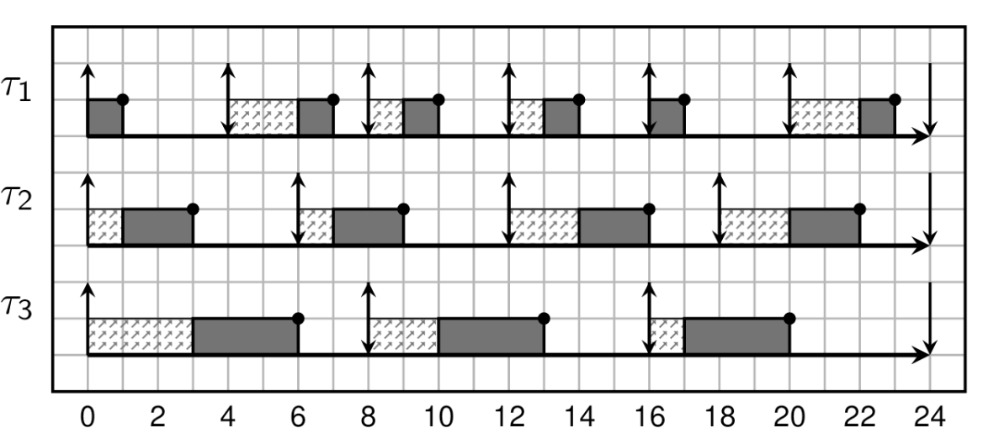
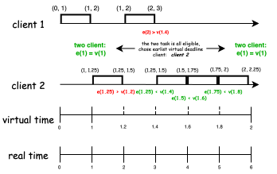
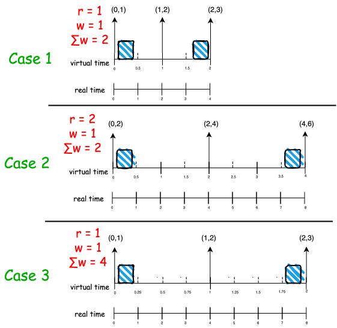

eevdf paper -- section 1 - 3
前言
本文参考eevdf论文, 介绍eevdf 算法涉及到的概念，基本原理，以及公式推导, 关于eevdf不难理解的章节, 本文 将以概括的方式涵盖, 较难理解的章节，本文 将以中英翻译的方式将论文内容展现出来。
关于论文中的公式，本文尽量将其详细的展开推导。并添加一些直观上的理解。
1. introduce
论文中的第一章节主要讲解了调度器的职责以及面临的挑战:
- 职责:
- 在多个竞争client之间分配资源
- 挑战:
- 随着更多实时性应用的出现（多媒体)，调度器应该更及时响应这些任务。 这样就得要求调度器能够预测哪些应用是偏实时性应用，哪些应用是偏 批处理应用
目前有两种调度器一定程度上满足了这种需求:
- proportional share （例如stride schedule)
- real-time (例如deadline 调度器)
简单介绍下这两个调度器:
| 调度器类型 | 基本算法 | 优点 | 缺点 |
|---|---|---|---|
| proportional share | 每个client有一个权重，按照权重所 占总权重的比例份额分配资源 | 灵活, 适应过载场景 | 实时性不高 |
| real-time | 基于事件驱动，每个事件由预测的服 务时间和截止时间来描述 | 实时性高 | 不好为批处理任务，建立事 件驱动模型;因为严格的准入策略， 使他们非常不灵活 |
关于real-time 不灵活的场景我们设想下: 假设现在cpu已经跑满了实时性任务，但是又来 了新任务。如果将其强行加入，可能导致之前的实时性任务都不能满足其之前定义的实时性 需求。可能导致较长时间内新任务都不能加入。而比例份额算法，则保持了较高的弹性，通过 降低这些任务的性能，来满足新任务的运行。灵活度较高。另外, real-time 算法无法服务于 批处理任务，因为real-time算法更倾向于有限服务时间的事件，而批处理任务的运行时间 很长。
WRAN
还需要系统的了解下real-time算法
而该论文则是结合了这两个调度器。即让资源分配按照 proportional share模型分配，但是 其又想使用real-time 算法的思想，怎么做呢?
首先是结合比例分配算法为 所有的任务建立事件驱动模型 :
- 为每个客户端分配一个权重，并按照该权重分配相应的资源份额
- client对时间片的需求转换为一系列对资源的请求事件
这样就为不同类型的任务统一了使用事件驱动模型的方法.
然后再按照real-time的思想设置服务时间和到期时间:
- 为每个client的请求分配一个虚拟的可用时间和虚拟的deadline
当一个请求的虚拟可用时间小于或等于当前虚拟时间时，该请求认为是可用的
- 该算法将新的时间片分配给earliest deadline(最早截止时间) 的具有eligible(有资格的) client 请求.
自此为止，eevdf的设计需求，基本实现介绍完毕。
2. Assumptions
本章主要描述数学建模: 首先按照比例分配算法, 定义:
- $w_i$: 任务i 的权重
- $\mathcal{A(t)}$: 在t时刻，活跃状态（正在竞争资源）的任务集合
- $f_i(t)$: t时刻，任务i的份额
可得下面公式:
\[f_i(t) = \frac{w_i}{\sum_{j \in \mathcal{A(t)}} w_j} \tag{1}\]理想状态下, 在一个时间段内$[t, t + \Delta{t}]$, client i 获得的调度份额是$f_i(t) \Delta{t}$, 在完全公平的理想状态下，任务i 在$[t_0, t_1]$ 时间段内应得的服务时间为:
\[S_i(t_0, t_1) = \int ^{t_1}_{t_0} f_i\mathcal{(T)dT} \tag{2}\]当然这是在理想状态下的完全公平调度，理想状态是指在任意$t_1$无限接近$t_0$时, client i 仍然根据上面的公式，获取到想要的调度份额。
但是现实总之残酷的, 正如<<操作系统导论>>一书中将调度部分纳入virtualization章 节一样, 我们总是希望计算机可以同时运行多个任务（虽然在某些情况下表现出的行为也类 似这样）, 但是计算机硬件(单核)在某个时刻只能运行一个任务。这样就导致了任务的运行 的时间段是 离散, 离散是公平调度问题的最终祸首。我们可以想象一个理想的世界: 每当 我们运行一个新任务，cpu自动会搞出一个物理核无性能损耗的运行它，这样还会有这样那 样的调度问题么。显然已经避免了绝大部分。
另外，因为更雪上加霜的是，因为离散所带来的调度器本身的开销，最终使得调度系统不得 不将离散更加离散，从而减少调度器本身的开销。
所以理想环境的服务时间和现实的服务时间有差距, 我们将时间段$[t_0^i, t]$这个时间段 client i服 务时间差，任务i的服务时间差记做$lag_i(t)$, 将现实的服务时间记做 $s_i(t_0^1, t)$, 可得:
\[lag_i(t) = S_i(t_0 ^ i, t) - s_i(t_0 ^i,t) \tag{3}\]NOTE
我们来思考下, $lag$ 是在计算机离散调度下，理想于现实可能会有怎样的差距。 如果我们将时间片设置为1ms，那么现在有两个相同权重的client a, b. a 运行 了该时间片。那么在t = 1ms这一时刻
\[\begin{align*} S_{a,b}(0, 1) &= 0.5\\ s_a(0, 1) &= 1 \\ s_b(0, 1) &= 0 \\ lag_a(1) &= -0.5 \\ lag_b(1) &= 0.5 \\ \end{align*}\]这个我们可以怎么理解呢? lag 为正表示整体系统在该时刻欠task的资源, lag为负 表示task 欠整体系统的资源。但是从整体来看，$\sum lag = 0$,
section 6 Corollary 1.另外，随着离散的调度运行下去，各个任务的lag 会发生动态变化，加入在下一个1ms, client b 运行，则该在此刻观察，这两个任务的lag 都为0。
另外，我们再思考下，lag和延迟有什么关系。可以lag 为负就是表示该任务有延迟， lag为负, 则表示自己的运行给他人带来了延迟。所以在lag 为负的情况下, 该client就 不应该在运行，应该让渡给lag 为正的client。
我们再从另外一个角度思考下，我们应以什么粒度的时间间隔观察lag, 粒度大小会带来什么 影响。观察lag就意味着, 我们需要重新评估该任务是否应该继续运行。这个就相当于调 度点, 粒度越小, 就意味着调度越频繁, 延迟越低。
通过上面的思考可以看出, lag概念的引入对eevdf的算法十分重要:
- lag正负可以决定 该任务是否有资格在下一个时间片运行
- 对lag 的观察频率可以决定该任务的运行频率，继而影响延迟
但是, 个人认为, lag虽然是一个非常重要的概念，但是并非是该论文最大的亮点，该论文 最大的亮点是，在比例份额调度的算法前提下，引入了real-time的算法模型: 事件驱动. 我们在下一个章节将会看到，作者引入了
- event
- service time
- virtual deadline
- virtual eligible time
3. The EEVDF Algorithm
为了更好的理解EEVDF，我们先简单看下EDF算法(Early Deadline First)算法，涉及 三个概念:
- period: 任务的请求周期
- runtime((WCET): 周期内最坏情况下的调度时间
- deadline: 截止日期
我们举一个例子来看下(deadline = period):
NOTE
盗用链接 [2] 中的例子
假设有三个任务:
| Task | Runtime(WCET) | Period |
|---|---|---|
| T1 | 1 | 4 |
| T2 | 2 | 6 |
| T3 | 3 | 8 |
此时cpu并未打满: \(\frac{1}{4} + \frac{2}{6} + \frac{3}{8} = \frac{23}{24}\)
来看调度的效果图:

可以看到三个任务均完美的运行.
那么在比例分配的算法前提下，利用edf 的概念和算法，满足我们的一些实时性的需求。
EDF好在哪呢? 好在其规定了deadline来对实时性的保证。
于是作者提出：我们现将连续执行的任务拆分成各个时间片段(Period), 并像EDF那样，定 义各个周期的deadline, 在deadline之前, 一定完成某个 runtime。但是runtime和周期(这 里我们默认为任务是连续执行, 周期Period为 指任务发起到deadline) 需要满足比例分配 算法，比例分配算法可以决定什么? 决定分配份额！好，那就在 deadline 到达之前完成其 比例份额的时间片!
基于这一思想，我们来看下论文中的数学建模:
定义如下概念:
- period: T
- service time(runtime): r
- 比例:$f$
可以得出 \(f = \frac{r}{T}\)
我们让deadline = period, 则deadline d:
\[\begin{align*} &T = \frac{r}{f} \\ &d = t + T = t + \frac{r}{f} \end{align*}\]从上面这些信息看，通过作者的抽象和deadline 实时调度算法很像，而区别服务的请求发 起不同，real-time 服务请求往往是外部事件（例如 packet arrival)，而在作者定义的模 型中，事件的发起既可以外部时间生成（例如客户端进入竞争），又可以是内部事件（例如 客户端完成当前请求后，产生新请求)。所以，这样的模型不仅可以满足事件驱动模型（例 如多媒体），同时也支持传统的批处理应用。
NOTE
此时, 离算法的核心比较接近了, 我们思考下:
现在距离最终的算法完成，还需要完成哪些工作?
- period ?: 就像deadline算法一样，可以定义每个任务的执行周期
- runtime ?: $r = T * f$ 公式，就可以得出在该周期内的服务时间
- deadline?: 上面也已经给出计算方法
那还剩余什么?
正如前文所说: when to initial a new request?
该选项尤其对于批处理任务十分重要。这是本文中的精髓部分, 最闪亮的点。
我们简单举个例子:
假设现在有两个任务c1, c2 两者都是批处理任务，我们定义两者$f$相同, 周期不同. $T_1 = 2ms, T_2 = 3ms$, 时间片为1ms
我们来看下，如果我们严格按照EDF的算法将是什么样子:
在$t = 4$, client 1 发起了一个新请求，deadline 和client2相同，为了更形象的说 明其存在的问题，我们选择client1 执行
上图的处理逻辑是永远选择deadline小的任务执行。但是从上图可见，批处理任务和实时 任务不同，其”贪婪性”意味着如果不抢占他，则会一直执行，从上图可以看出这严重影响 了公平性。
所以, 我们必须采用其他的机制来打断其连续的发起event，并且在合适的时机再允许 其发起

通过公式(1) (2) 可以推导 client i 在 时间段$[t_1, t_2)$内应得的服务时间:
\[S_i(t_1,t_2) = w_i \int^{t_2}_{t_1}\frac{1}{\sum_{j \in {\mathcal{A(T)}}} w_j} \mathcal{dT} \tag{4}\]同时我们定义系统的虚拟时间:
\[V(t) = \int_0^t \frac{1}{\sum_{j \in {\mathcal{A(T)}}} w_j} \mathcal{dT} \tag{5}\]virtual time的以所有客户端weight 和成反比增长。
结合(4)(5) 得出:
\[S_i(t_1, t_2) = w_i(V(t_2) - V(t_1)) \tag{6}\]作者的想法很直接，就是在client 运行过程中, 在任务服务时间满足后，此时在发起 下一个请求前, 计算一个 名为virtual eligible time的时间点, 只有 当前的虚拟时间 $V(t)$ 达到或超过 $V(e)$ 时，才允许发起下一个请求。
那 $V(e)$ 怎么计算呢? 让其实际服务时间和理想服务时间相等的点，这符合比例分配调度 的思想。另外这里有一个问题，如果此时计算得到的 $V(e) < V(t)$, 该任务继续运行且一 直运行，那后续$V(e)$ 一定会追上$V(t)$ 么， 答案是一定会的。我们放在下面说明。
我们假设在$t^i_0$ 客户端开始活跃，想要在$t$时刻发起一个新请求，需要满足:
\[S_i(t_0^i, e) = s_i(t_0^i, t)\]我们来直观理解下，如果在时刻$t$, $e > t$，则表示在未来的时刻$e$，才能用这么多的资源， 显然在时刻$t$用超了, 则此时该任务不能在运行，直到时间流逝到$e$时刻。该等式相等，再 发出一个新请求。
相反, 如果在时刻$t$, 计算得到的$e < t$, 则表示在过去的时刻$e$, 就应该享用这些资源， 但是现在到了时刻$t$还没有使用，那就很亏，需要立即发出请求，使用这些资源。
我们结合等式(6) 可以推导 $V(e)$
\[V(e) = V(t_0^i) + \frac{s_i(t_0^i, t)}{w_i} \tag{7}\]NOTE
推导过程:
\[\begin{align*} S_i(t_0^i, e) &= s_i(t_0^i, t) \\ w_i(V(e) - V(t_0^i)) &= s_i(t_0^i, t) \\ V(e) &= V(t_0^i) + \frac{s_i(t_0^i, t)}{w_i} \tag{7} \end{align*}\]
再接着定义deadline, deadline 含义是, 在$[e, d]$ 时间内, 使其理想的 服务时间等于服务时间.即
\[S_i(e, d) = r\]这个也好理解, 在 $e$ 时刻, 发起请求时，请求的服务时间为 $r$，使deadline定义为理 想状态下完成该服务时间$r$所需要的 real time。
结合公式(6)， 推导$V(d)$
\[V(d) = V(e) + \frac{r}{w_i} \tag{8}\]NOTE
推导过程:
\[\begin{align*} S_i(e, d) &= w_i(V(d) - V(e)) = r \\ V(d) &= V(e) + \frac{r}{w_i} \end{align*}\]
文中给出了EEVDF 算法的核心描述:
EEVDF Algorithm. A new quantum is al located to the client that has the eligible request with the earliest virtual dead line.
接下来，我们来用公式描述一个批处理任务的连续多次请求ve 和 vd 表达式:
第一次:
\[ve^{(1)} = V(t^i_0) \tag{9}\]根据公式8
\[vd^{(k)} = ve^{(k)} + \frac{r^{(k)}}{w_i} \tag{10}\]如果每次任务都能用完其服务时间, 结合公式(7)(8)可得
\[ve^{(k+1)} = vd^{(k)} \tag{11}\]NOTE
我们来推导下公式(11):
由于每次client都能使用完其服务时间，那么第k次也是如此, 可得
\[\begin{align*} r^{(k)} &= S_i(e^{(k)}, d^{(k)}) = s_i(e^{(k)}, d^{(k)}) \\ vd^{(k)} &= ve^{(k)} + \frac{r^{(k)}}{w_i} \\ &= ve^{(k)} + \frac{s_i(e^{(k)}, d^{(k)})}{w_i} \end{align*}\]根据公式(7), 可以看出，该等式正好符合$V(e)$的表达式，所以等于下一次 的$V(e)$ 即:
\[vd^{(k)} = ve^{(k)} + \frac{s_i(e^{(k)}, d^{(k)})}{w_i} = vd^{(k+1)}\]另外需要注意的是，这里为什么要计算$V(e)$, $V(d)$, 而非使用real-time $e,d$. 原因在于我们可以在$t$时刻计算出 $V(d), V(e)$, 但是计算不出 $e,d$, 为什么？ 因为这是发生在未来的时间，未来的$V$的斜率无法预知(甚至会发生跳变). 文章中 举了一个例子, 我们可以定义一个水库满的状态，但是无法定义该水库什么时候会满， 因为我们不知道水库进水的速度。
我们看公式(7)和公式(8)，$\frac{s_i(t_0^i, t)}{w_i}$ 和 $\frac{r}{w_i}$有步进 算法per-task vruntime的影子, 但其实完全不同, 我们怎么直观理解呢?
我们先举个例子: 系统中有两个client 1, 2:
- 时间片: 1
- 服务时间: $r_1 = r_2 = 1$
- weight:
- $w_1 = 1$
- $w_2 = 4$
- 任务加入时间
- client 1: 0
- client 1: 1
如下图:

在eevdf中对于各个client来说，只有一个时间会变化, 即 virtual time: $V(t)$。 随着时间的流逝, 而权重小的任务在一次请求后，$V(e)$会变得很大, 如时刻$1.4$, client 1 在发起下一个请求时$V(e) \rightarrow 3$, 就会导致在比较长的时间内, $V(t)$才追 上能$V(e)$. 让资源让渡给其他任务, 而权重大的任务相反, 从而获得更多的执行次数.
而关于$V(d)$, 从图中可以看出, 加入两个任务同时发出请求，并且都是eligible, 则权重大的任务 $V(d)$ 会计算的比较小, 如时刻$1, 2$, 从而抢先获得资源
另外，我们从这个例子中也可以看出$V$的优雅, 无论发生了什么，任务只需关注各自 $V(e), V(d)$, 例如在时刻 $1$ , 无论 有无client 2 加入, 调度器是否允许client 1, 运行 只需要关注:
- Have a eligible request: $V(e) \leq V(t)$
- whether $V_1(d) = 2$ is earliest
如果两个条件都是真, 则允许client 1 运行.
而对于$V(d)$来说, 权重大的任务其$V(d)$的间隔就越短。对资源需求越迫切。另外, 我们是否真的能在$V(d)$之前完成所要求的资源么?
A: 不会, 我们需要认识到一点，在service time为1的情况下, client 2 $V(e)$ 的变化 一定比 $V(t)$ 要快。(因为分母不同, $V(e) 为 \frac{1}{w_2 (4)}$, $V(d)$ 为 $\frac{1}{\sum w_i (5)}$, 那也就意味着在 $V(t) \in [1.4, 2)$ 这段时间内, $V(e)$ 一直追赶 $V(t)$, 也就是这段时间内 $V(e) < V(t)$. 那在这段时间中的各个 $V(d)$的点也是如此，即在这些$V(d)$ 时刻中，$lag_2 > 0$. $lag > 0$就说明有延 迟。
我们来举个例子, 以client 2 在$V(t) = 1.4$ 发出的请求为例 – $(1.25, 1.5)$, 我们 看下在$V(t) = 1.5$时的lag值. 下面的时间都时real time, $V(e) = 1.25时$, \(V_{real\_time}(e) = 2.5\), $V(d) = 1.5$时, \(V_{real\_time}(d) = 3.5\), real time 的时间范围是, $[2.5, 3.5]$, 其实就是一个单位的服务时间r.
\[\begin{align*} s_2(2.5, 3.5) &= 1 \\ S_2(2.5, 3.5) &= 4 * \frac{3.5 - 2.5}{5} = 0.8 \\ lag_2(3.5) &= S_2 - s_2 = 0.8 - 0.5 = 0.3 \end{align*}\]可以看到, 在$V(d) = 1.5, lag = -0.2$, 为什么会出现这种情况呢? 因为在$V(e) = 1.25$ 时, client 2 已经eligible，并且其deadline也是最小的。其 该run，但是其没run。如果计算这段时间lag, 这段$lag = - 4 \frac{0.5}{5} = -0.4$, 在其运行时, 每经过一个时间片, $lag$ 增加一些，直到$V(t) = 2$ 时, $lag\rightarrow 0$
但这个延迟会限制在一个时间内, 即 $q$, 也就是说，在$V(d)$时刻该满足的需求，一定 会在 $d+q$ 时刻满足, 这个会在第6章 Lemma 4 中证明.
由于上面我们举了一个例子，这里我们不再引用论文中的例子(论文中的例子也有些问题) 4, 来说明eevdf算法是如何处理批处理任务的, 我们从另一个角度触发，理解 下 eevdf 中的$r$ – service time.
$r$指的服务时间, 如果按照EDF 中的定义，服务时间是指, 在某个period $T$ 内, client运行 的时间，这个时间指最坏情况下的运行时间。
但是在在该算法中，$r$ 被定义为$S_i$, 即理想情况下的服务时间,该论文的将$r$定义 为每个client所应该配置的参数，通过定义 $r$, $w_i$, 计算得到该任务的各个$V(e)$, $V(d)$。
前面提到过$r$ 和 period $T$ 的转换公式
\[T = \frac{r}{f}\]如果对于同一个$w_i$, 如果$r$越大, 则$T$越大, 则其对资源的需求就越不迫切, 根据前 面的公式(10) 可以看出，其$V(d)$ 的间隔就会越大, 则在争抢资源中就会比较被动。俗称 喝汤。
举个例子, 来看看不同的$r, \sum w_i$组合下，最大的延迟情况:

可以发现, $r$ 影响的是 请求中的$V(e), V(d)$的间隔, 从而导致$V(d)$之间间隔较大，从而 导致了在资源争抢是处于被动，而随着间隔加大，最大的延迟也会变高。（上面也讨论过 $w_i$的影响也类似于此.
而当我们变更了 $\sum w_i$ 之后（在图中可以理解为有任务加入), 各个请求的 $[V(e), V(d)]$ 不发生改变。而变更的是$V(t)$对于real time的比例。这样在面对 dynamic operations有非常好的扩展性。实现起来也是比较简单，因为只有一个全局状态 $V(t)$.